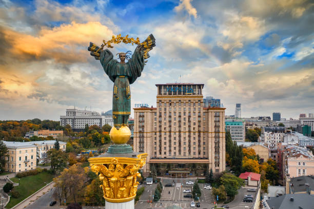
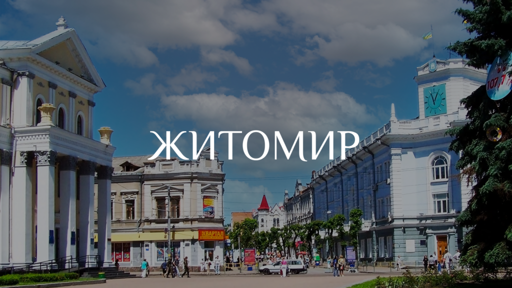
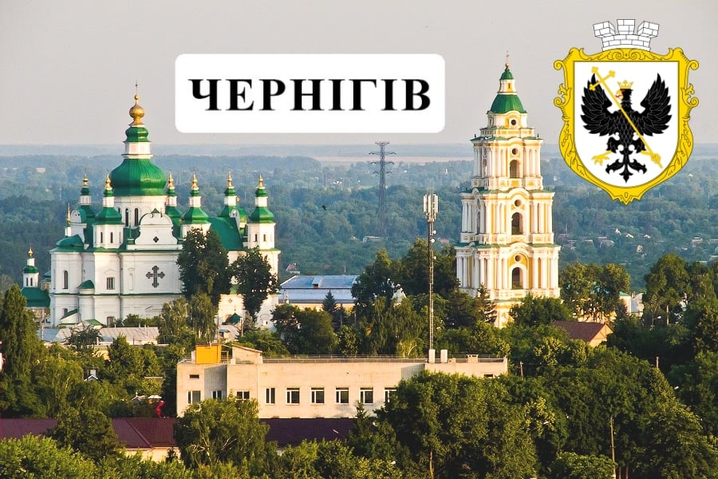
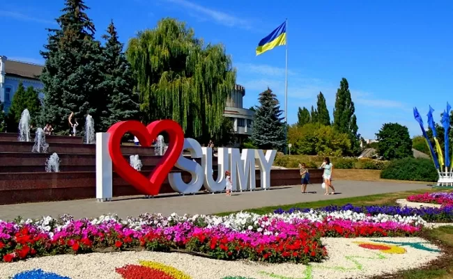
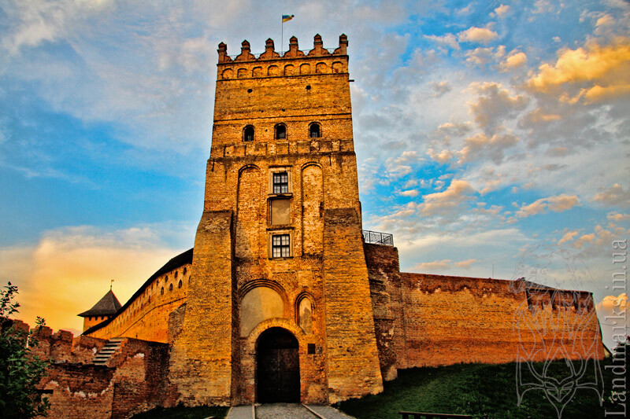

Київ:
Київ – дуже різноманітне місто. Туристи закохуються в нього щоразу, як відвідують. А місцеві щодня відкривають нові локації. В сучасному Києві неймовірно цікаво поєднується історія з трендовими громадськими закладами, просторами для роботи чи відпочинку, новими культурними пам’ятками. В столиці є що подивитись і тим, хто народився тут, і хто постійно подорожує, і тим паче хто приїздить перший раз.
Житомир:
Житомир можна сміливо віднести до міста європейського типу – розвинута структура, велика кількість закладів, торгових центрів і інших місць відпочинку. Житомир можна сміливо віднести до міста європейського типу – розвинута структура, велика кількість закладів, торгових центрів і інших місць відпочинку. На додачу до цього, центральна площа міста дуже простора і має свій власний характер, який створює певну атмосферу. Одна із головних особливостей цього обласного центру – його індустріальні райони знаходяться на віддалі від його основної частини. Завдяки цьому там просто відсутня звична всім атмосфера індустріалізації.
Чернігів:
Черні́гів — місто України, обласний центр Чернігівської області. Належить до найдавніших міст України, заснований у кінці VII століття при впаданні річки Стрижень у Десну. Чернігів у часи Середньовіччя — одне з головних міст Київської Русі та, за оцінками істориків, одне з найбільших міст тогочасної Європи, столиця Чернігівського князівства, до володінь якого належали, зокрема Кубань, Керченський півострів, Муром, Рязань і частина нинішнього Підмосков'я[2]. 1239 року місто було зруйноване монголо-татарами й занепало, проте в XVII столітті одержало Магдебурзьке право та статус центру воєводства у складі Речі Посполитої, а за козацької держави Богдана Хмельницького стало головним містом Чернігівського полку. Завдяки діяльності чернігівських архієпископів Лазара Барановича й Іоанна Максимовича та підтримці гетьмана Івана Мазепи Чернігів перетворився на один із найзначніших осередків освіти й культури в Україні. У місті, зокрема, діяв Чернігівський колегіум — перший вищий навчальний заклад на території Лівобережної України. Чернігів славиться своїми пам'ятками часів Русі та Гетьманщини. Видатний історик Михайло Грушевський називав його «українською Равенною», порівнюючи з містом у Італії, відомим своїми стародавніми пам'ятками. Історичний центр Чернігова є кандидатом на внесення до переліку об'єктів Світової спадщини ЮНЕСКО. 6 березня 2022 року указом Президента України з метою відзначення подвигу, масового героїзму та стійкості громадян, виявлених у захисті своїх міст під час відсічі збройній агресії Російської Федерації проти України, місту присвоєно почесну відзнаку «Місто-герой України».
Суми:
Су́ми — місто обласного значення в північно-східній частині України, на Слобожанщині, адміністративний центр Сумської міської громади, Сумського району і Сумської області. Місто лежить на берегах річки Псел при впадінні до неї річки Сумки. Населення міста становить 256,5 тис. осіб (01.01.2022), площа — 95,4 км². Суми поділяються на 2 міські райони: Ковпаківський і Зарічний.
Луцьк:
Вперше згадка про Луцьк з'явилася в Іпатіївському літопису (датована 1085 роком), де вже тоді вказаний як досить істотно розвинене місто, що мало князівську резиденцію та віче. Близько 1000 року Володимир I Великий приєднав Волинь до Київської Русі й збудував у Луцьку дерев'яну фортецю, що згодом перетворилася на істотну перепону на шляху загарбників. Луцький замок витримав облоги військами засновника Москви Юрія Долгорукого в 1150 і потім галицького князя Володимира Володаревича спільно з Юрієм Долгоруким у 1155. Місто тривалий час було нездоланною перепоною на шляху татаро-монгольської орди. Уже в ті часи Луцьк відігравав роль економічного та адміністративного центру Волинського князівства, що було в складі Галицько-Волинської держави (з 1253, після коронації великого князя Данила Романовича — Королівства Русі). В 1255 році околиці Луцька були спустошені походом литовського князя Міндовга, але нападників вдалося загнати в озеро, де вони потонули. Пізніше місто невдало брав штурмом хан Куремса. Проте в 1259 році укріплення Луцька було розібрано на вимогу монгольського воєводи Бурундая, що підтримали князі Лев і Василько. Місто, однак, лишилося у володінні волинських князів. 1340 року по смерті володимирського князя Юрія-Болеслава Тройденовича луцький князь Дмитро-Любарт отримує статус великого князя, а Луцьк здобуває статус столиці Галицько-Волинського князівства. Тоді ж зводиться резиденція князя Любарта — цегляний Луцький замок. Це одна з небагатьох давніх споруд готичного стилю, які збереглися в Україні. Замок має три вежі: В'їзну, Владичу та Стирову. Всередині замку розташовувався кафедральний собор Іоанна Богослова — храм класичного візантійського стилю. У XV столітті в ньому висвячували московських єпископів. З амвона церкви виголошував свої палкі проповіді Петро Могила. Розкопки давнього храму в середині 80-х років XX століття виявили за апсидою церкви поховання титулованих осіб, зокрема — князя Ізяслава Інгваровича, син Інгвара Ярославича, який загинув під час битви на річці Калка. Історики припускають, що саме тут був похований і Великий князь Любарт.
